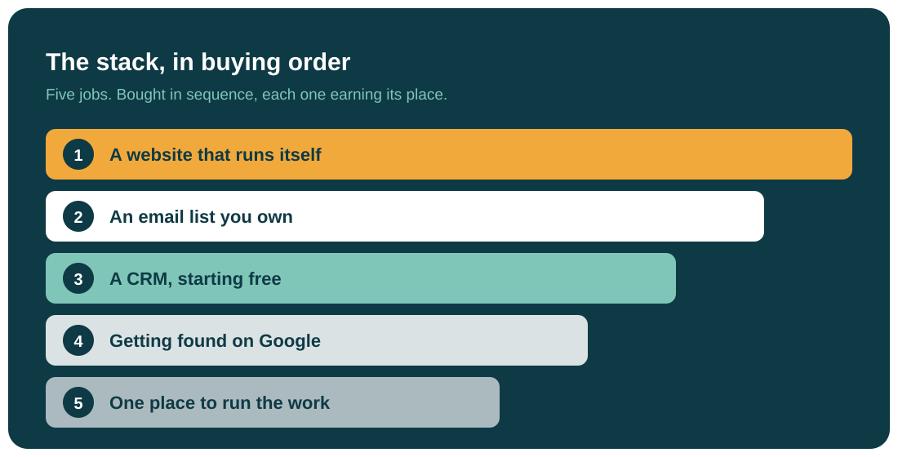

The Solopreneur Online Stack: Website, CRM and SEO in the Right Order, and What to Skip

Sensible Stack: Streamlining business, whatever your size
Disclosure: the HighLevel link on this page is an affiliate link, and we may earn a commission if you sign up through it. Other visit links on this page are plain and earn us nothing.
The short answer
A one person business needs five jobs covered, in this order: a website that stays up, an email list you own, a simple CRM so no enquiry gets lost, a way to get found on Google, and one place to run your work. Everything else is a later problem. Buy them in that order, start on the free tier of each, and only pay when the free version starts costing you customers.
Job 1: A website that runs itself
Your site is the only shop window that never closes. The sensible start is WordPress on hosting you do not have to think about. Budget shared hosting is fine at zero traffic, but the first time it breaks at the wrong moment you will wish you had paid for managed hosting.
Our full comparison, Kinsta vs WP Engine, scores both in detail: premium managed WordPress hosting for people with no IT help, handling backups, security and updates to the environment.
Job 2: An email list you own
Social followers are rented. An email list is yours, and for a solo operator it is the cheapest follow up system in the world.
Our pick for creators and one person brands: Kit, free for up to 10,000 subscribers for broadcasts, forms and landing pages, with automations on the paid Creator plan. Our full first hand comparison, Kit vs Klaviyo, ran the same real list on both platforms. When the form has to take a payment or a file, rather than an email address, that is a different tool: the Jotform review.
Job 3: A CRM, starting free
When enquiries live in your inbox and your memory, some of them die there. A CRM is simply a list that never forgets.
Our route: start on the free HubSpot CRM. It is genuinely usable at no cost, and we say that as people who built our first ever landing page on HubSpot. Move to a paid all in one like HighLevel only when follow up volume is real: bookings, quotes, reminders and SMS chasing, where automation saves hours every week. The CRM side of that decision is in HubSpot vs the CRM field.
Job 4: Getting found, in bursts
Google traffic compounds, but SEO tools are priced for professionals. Start with a free Semrush account for weekly checks, and use a trial or a single paid month per quarter for deep research and content planning. Our full breakdown, including the solo maths on the $139.95 entry plan, is Is Semrush Worth It for a Solopreneur.
Job 5: One place to run the work
One project tool, not three. Pick the one that matches how your brain works and stay for at least a year. Our first hand reviews cover Asana, ClickUp, monday.com, Motion and seven more in the full tools index, and explain why we run our own work in Notion. The rule that matters: the best project tool is the one still open on your screen in month six.
What the whole stack costs: three options
Same five jobs, three budgets. Pick the option that matches your bank balance today, not the business you hope to have next year. You can move up a tier one tool at a time.
Option 1: The brokepreneur stack, roughly $0 to $15 a month
- WordPress on budget hosting or a simple site builder
- Kit free plan
- HubSpot free CRM
- Semrush free account
- Notion free plan
This stack is genuinely enough to start, and thousands of one person businesses run on less. Broke is a starting point, not an identity: every tool here has a paid tier waiting for the day the free one runs out of room.
Option 2: The sensible middle, roughly $50 to $150 a month
- Managed WordPress hosting (Kinsta or WP Engine) so the site never needs you
- Kit Creator when you need automations and sequences
- HubSpot paid tiers, or HighLevel at $97 a month when follow up and bookings are eating your evenings
- Semrush in paid bursts, a month at a time, not by default every month
- Notion free, or its first paid tier when you outgrow it
This is where most healthy one person businesses land: real money, but every dollar is buying time back or catching enquiries that used to slip.
Option 3: Money no object, $500 a month and up
- Top tier managed hosting with the support plan that answers first
- Kit on its highest tier, list size be damned
- HighLevel at $297 a month with the full automation suite switched on
- Semrush paid every month at $139.95 and up, no burst maths
- Notion on a paid business tier, plus a paid project tool if your work needs one
At this level you are not buying features, you are buying hours: no hosting babysitting, no manual follow up, no SEO guesswork. It only makes sense when an hour of your time bills for more than the stack costs.
Notice what is not on any list: five overlapping subscriptions bought in a sale, and any tool bought before the job it does exists in your week.
The order matters more than the tools
Website, list, CRM, search, work system. Each one makes the next one worth more: traffic is wasted without a list to catch it, a list is wasted without follow up, and follow up is wasted if the work itself is chaos. Buy in order, start free, and let running out of room, not a sales page, tell you when to upgrade.
Research note: Prices and free plan limits checked November 2026. Confirm on vendor sites before buying, plans change.